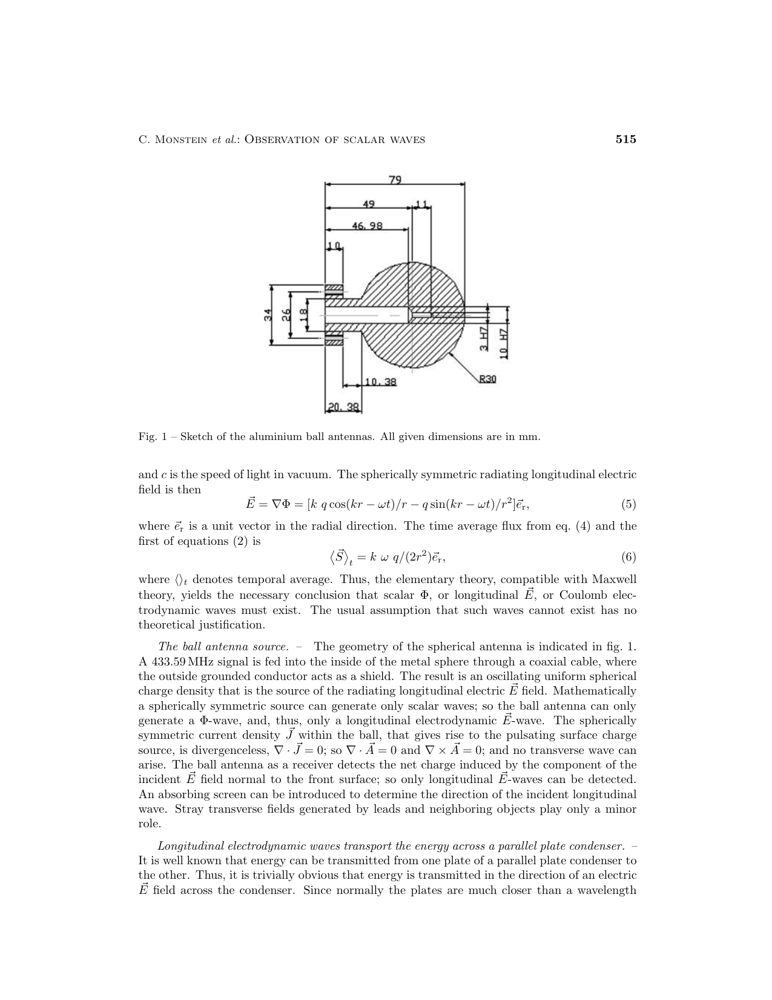
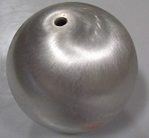
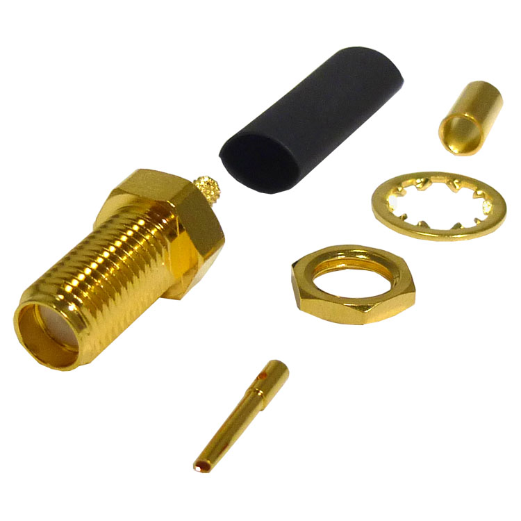

433.59 MHz ball-and-rod polarizer · 70 cm Technician-legal · cost/decision sheet
Exact 2002 Fig. 1 hardware vs catalog substitutes vs dollars
Correspondence aid for Dan first (what to spend), then Steve Morris (human tech: SKUs, cut lengths, already-purchased bulkheads), then L.M. Hively (is the catalog hollow 3003 Aluminum ball + SMA bulkhead an acceptable Fig. 1 substitute?). This sheet is the 433.59 MHz Monstein ball-and-rod polarizer (this page and monstein.html). The other category on the hub is the 1.3 GHz Faraday-cage pancake (setup / lab / fields) — different frequency, different antennas, different shopping list.
Who this sheet is for (in that order)
- Dan — two paths: buy catalog hollow balls and stock brass/coax, or send Fig. 1 out for a real qty-2 quote. Catalog path is about a $400 class before shipping/tax/cutting. Exact Fig. 1 CNC is almost certainly more; we do not have a firm shop bid.
- Steve Morris (human tech) — four 36″ × 1/8″ brass sticks, cut to 346 mm; two SMA-M/M RG-316 jumpers (or the TinySA Ultra kit jumpers); 901-9875 bulkheads already purchased; optional W1 four-pack for the hysteresis follow-on.
- Hively — electrical question below: hollow 2.50″ 3003 Aluminum + 901-9875 vs machined 60.0 mm ball with 10H7/3H7 bore.
The question, stated plainly
Is this hollow 2.50″ 3003 Aluminum sphere (K-Mac KB-2016, existing ¼″ hole) plus an Amphenol 901-9875 SMA-F bulkhead through that hole an acceptable substitute for Fig. 1’s machined 60 mm aluminium ball with a 10H7/3H7 coaxial cavity, or does the missing internal shaft/bore / the 3.35 mm wall / the 3003 Aluminum alloy change the feed (outer as shield vs center conductor) enough that you would not treat them as equivalent for a 433.59 MHz ball-antenna polarizer bench?
What Fig. 1 actually shows
Monstein & Wesley used identical aluminium ball antennas, 6 cm diameter, coax fed to the inside of the sphere with the outer conductor as shield. Fig. 1 of the 2002 letter is a machine-shop sketch (dimensions in millimetres):
- R30 — 60 mm outside diameter (radius 30 mm).
- 10H7 / 3H7 coax bore (outer / inner fits on the coaxial cavity).
- 18 mm shaft into the ball.
- 34 mm base.
- Centrally fed; outer of the ball as shield.
- Two pieces as printed (turned ball + feed/base).

Author-hosted copy (filename typo “electroydnamic”): jamespaulwesley.org. Full 433 MHz Monstein briefing: monstein.html.
Proposed procurable substitute
Instead of machining Fig. 1 from solid aluminium, the catalog path is a hollow 3003 Aluminum ball that already has a ¼″ hole, plus a stock SMA bulkhead through that hole.
K-Mac 2.50″ hollow 3003 Aluminum

- 2.50″ (63.5 mm) OD — 3.5 mm larger than Fig. 1’s 60.0 mm.
- 3003 Aluminum, hollow, wall 0.132″ (3.35 mm).
- Existing ¼″ hole — intended for the SMA bulkhead, not a 10H7/3H7 internal coax cavity.
- Need two (TX + RX): catalog $126.96 each, ≈ $253.92 before shipping. Same vendor also lists 2.00″ KB-2014 and 3.00″ KB-2015; Butterworth’s reconstruction used ~3″ Al.
Catalog cost (K-Mac KB-2016, 2.50″ 3003 Aluminum hollow): $126.96 each; two (TX+RX) ≈ $253.92 before shipping. Source: k-mac-plastics.com/balls/hollow-metal-balls.htm.
Optional follow-on rods (same 9 × 34.6 cm geometry as the brass λ/2 polarizer; this is the Hively-question page, so the full rod list stays on monstein.html#parts): 1/8″ W1 water-hardening drill rod, Speedy Metals 1/8 RD W-1, $11.11 per 36″ stick; four sticks cover nine 34.6 cm lengths ≈ $44.44 before cutting/shipping. Procurable high-carbon / high B–H-loop stand-in for Hively’s unpublished “high-magnetic-hysteresis rods,” not a claim it is his exact alloy. Brass 1/8″ 360 remains the first polarizer article.
Amphenol 901-9875 SMA-F bulkhead

901-9875 SMA female bulkhead connector, catalog photo.">Gender chain on this bench: TinySA Ultra RF port is SMA-F (hole). Jumper is SMA-M/M (pin both ends). Bulkhead through the ¼″ hole is SMA-F on the outside so the cable pin screws on. Prefer 901-9875 as the “coax into the interior” part (crimp RG-316, center soldered inside the sphere). See monstein.html#bulkhead.
Side-by-side
| MW 2002 Fig. 1 | Proposed catalog build | |
|---|---|---|
| Outside diameter | 60.0 mm (R30) | 63.5 mm (2.50″) |
| Construction | Machined aluminium ball | Hollow 3003 Aluminum, wall 3.35 mm (0.132″) |
| Feed cavity | Internal coax cavity 10H7 / 3H7; 18 mm shaft; 34 mm base; center feed; outer as shield | Existing ¼″ hole + 901-9875 SMA-F bulkhead; no machined 10H7/3H7 bore or 18 mm shaft |
| Frequency | 433.59 MHz (λ ≈ 0.692 m) | Same (433.59 MHz, 70 cm Technician-legal) |
| a/λ at 433.59 MHz | ≈ 0.043 (a = 30 mm) | ≈ 0.046 (a = 31.75 mm); both ka ≪ 1 |
| Prior reconstruction | — | Butterworth et al. used ~3″ aluminium (not this SKU) |
Procurement table (catalog prices ~Sep 2026)
Prices as labeled on vendor pages around Sep 2026. Exclude shipping unless a line notes otherwise. Not a shop quote. Bulkheads already purchased; TinySA Ultra kit jumpers may replace the RG-316 M/M pair.
| Item | What to buy / already have | Catalog $ (ex-ship) |
|---|---|---|
| Aluminium spheres (3003 Aluminum) | 2 × K-Mac KB-2016 2.50″ hollow 3003 Aluminum, ¼″ hole. k-mac-plastics.com/balls/hollow-metal-balls.htm | $126.96 × 2 = $253.92 |
| SMA bulkheads | Already purchased: 2 × Amphenol 901-9875 (crimp for RG-316 if they terminate raw coax instead of using M/M jumpers). $11.90 each. | $11.90 × 2 = $23.80 (paid) |
| Coax jumpers | Amphenol 135101-01-12, 12″ RG-316 SMA-M to SMA-M, 50 Ω. RF Parts 135101-01-12.html $16.90 each, qty 2. TinySA Ultra kit already includes two ~30 cm SMA-M/M jumpers — those can be used instead. | $16.90 × 2 = $33.80 (or $0 if kit jumpers) |
| Brass rods (first polarizer) | Need four 36″ sticks of 1/8″ round brass (9 × 34.6 cm = 3.11 m). Home Depot Everbilt 1/8 in × 3 ft solid brass, model 0301, ~$6.93: Everbilt 0301 → ~$28 for four. Prefer 360 alloy if they can: McMaster 8953K101 (price on McMaster at checkout). Steve: cut to 346 mm. | ~$28 (four Home Depot sticks) |
| W1 hysteresis follow-on | Same 9 × 34.6 cm geometry. Speedy Metals 1/8″ × 36″ W1: 1/8 RD W-1, $11.11 × 4. Not a claim this is Hively’s exact alloy. | $11.11 × 4 = $44.44 |
Catalog path subtotal (balls + 2 bulkheads + 2 RG-316 jumpers + brass four-pack + W1 four-pack) ≈ $254 + $24 + $34 + $28 + $44 ≈ $384 before shipping/tax/cutting. Call it an about $400 class — not a fake precise total.
The 3 ft (91.4 cm) store-bought brass and W1 sticks get cut to 34.6 cm because they are a parasitic λ/2 polarizer, not a driven λ/4 monopole. Leave them uncut only as a named deviation — why: monstein.html#rod-length.
Exact Fig. 1 machine-shop path (no vendor bid)
We do not have a firm shop quote. Do not treat the band below as a bid from a named shop.
- Fig. 1 is a turned 60.0 mm Al ball (R30) with 10H7/3H7 coax bore, 18 mm shaft, 34 mm base, two pieces, millimetre dimensions as printed.
- Qty-2 custom US prototype CNC (spherical turn + H7 ream/inspect) is typically in the $500–$1,500 per pair band because programming/setup dominate; aluminium bar stock itself is only tens of dollars (e.g. 2½″ 6061 round, All Metals ~$13.64 for a short cut — allmetalsinc.com 2½″ 6061 — not the finished antenna).
- So yes: two exact Fig. 1 spheres are almost certainly more than two hollow KB-2016s (~$254). Material is cheap; the shop hours are not.
Request-quote checklist (next step for a real number)
Send the Fig. 1 PDF to a local FL/RI shop or Xometry/Protolabs. Ask for a quote; do not invent one here.
- Quantity: 2 (TX + RX).
- Material: 6061-T6 aluminium (or shop-equivalent machining alloy; Fig. 1 does not name 3003).
- Geometry: millimetre dimensions as printed on Fig. 1 — 60.0 mm ball (R30), 10H7/3H7 on the coax bore, 18 mm shaft, 34 mm base, two pieces.
- Inspect: H7 on the bore.
- Attach: Fig. 1 page (doi:10.1209/epl/i2002-00136-9 / author PDF linked above).
Still electrically small
At 433.59 MHz, λ = c/f ≈ 0.692 m. The MW ball has a/λ ≈ 0.043; the 2.50″ ball has a/λ ≈ 0.046. Both are ka ≪ 1 (k = 2π/λ). The open question is not “is it a 6 cm dipole at UHF?” — it is whether dropping the internal coaxial shaft/bore, using a thin 3003 Aluminum wall, and feeding through a stock SMA bulkhead still counts as Fig. 1’s “centrally fed, outer as shield” geometry.
What this page is not
- Not a Meyl kit. Meyl Demo / Experimental kits are HF Tesla pancakes with spherical electrodes (kHz–low MHz). Do not treat them as a 433 MHz ball feed. See monstein.html#meyl-kit.
- Sleeve balun, not skirt on any follow-on monopole work Hively suggested for this same 433.59 MHz ball-and-rod geometry.
- Different experiment (not this polarizer): 1296 MHz Faraday-cage TEM vs SLW — setup.html / fields.html.
Back to the 433 MHz parts list
Balls, rods, cables, and bulkhead SKUs for the 433.59 MHz bench live on the Monstein page: monstein.html#parts and #bulkhead. Dollars and the shop-vs-catalog decision are this page’s #cost table. This page asks whether the catalog 2.50″ 3003 Aluminum + 901-9875 pair is electrically close enough to Fig. 1 to buy. Rods for the polarizer (brass 1/8″ 360 first; optional W1 follow-on) are listed on monstein.html#parts.
DOI: Monstein & Wesley, EPL 59, 514 (2002), doi:10.1209/epl/i2002-00136-9. This page © 2026 Dan Britton, educational use. Scalar / longitudinal claims are not IEEE-standard antenna theory.